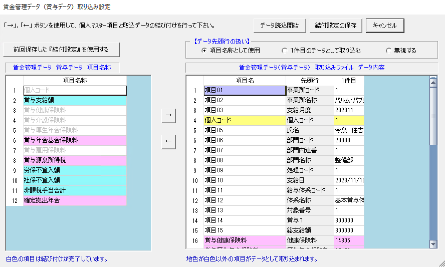
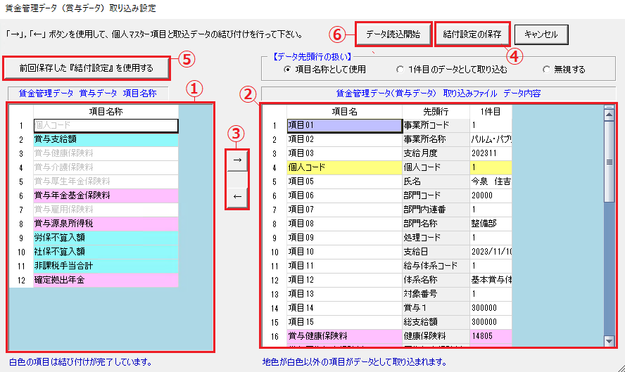
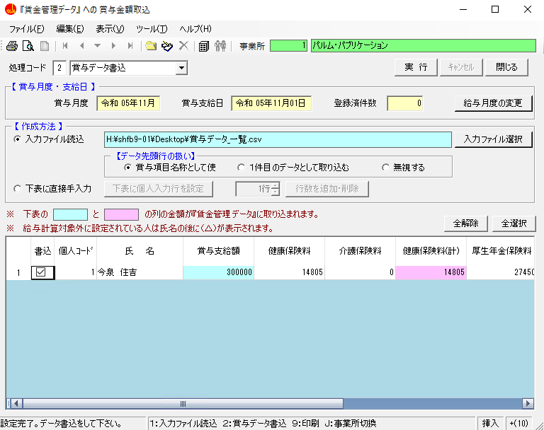
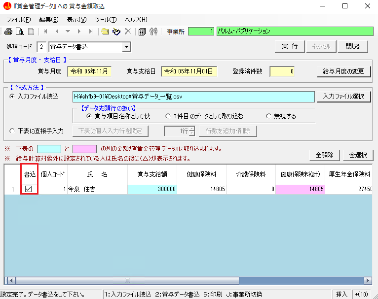
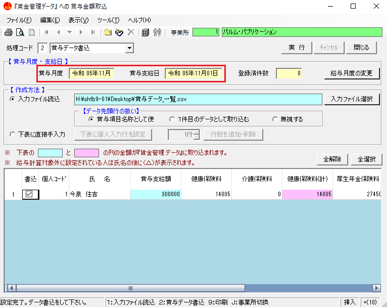
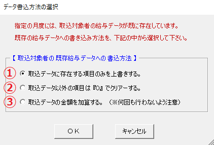
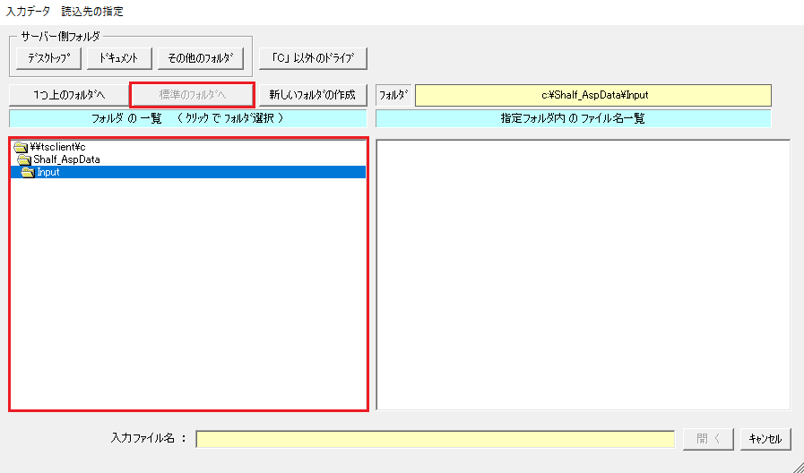
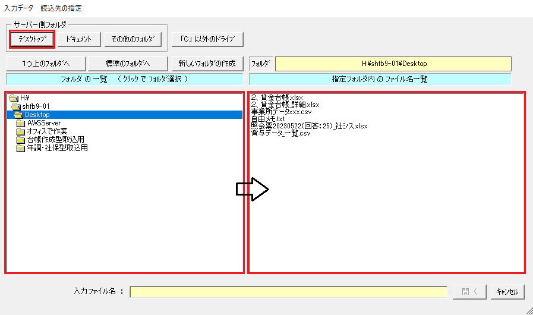
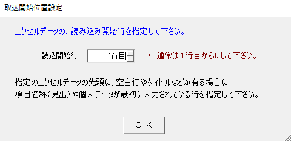

目 次
賃金台帳（賃金管理）に賞与データを取り込む手順について解説します。
※ 賞与については、給与とは異なり項目は共通です。
-
１-３直接入力する
- ①入力を始める
- ②入力を行う
- ③賃金台帳（賃金管理）に保存する
目 次
１-１ 取込データの給与月度・給与支給日の設定の手順
{kind=link}
１-２ ファイルより取り込む
ファイルより取り込む方法について解説します。
{kind=link}
{kind=link}
③ 項目の結び付けを行う
データの先頭行を一致させます。左側の社労法務システムの個人マスターの項目に、右側の取り込みファイルのデータの項目を結び付けます。
{kind=link}
【データ先頭行の扱い】
・項目名称として使用
取り込んだデータ（右の表）の先頭行を、給与項目名称として扱います。
・１件目のデータとして取り込む
取り込んだデータ（右の表）の先頭行を、１件目のデータとして取り込みます。
給与項目名称は自動で「項目01」「項目02」・・・と振られていきます。
・無視する
取り込んだデータ（右の表）の先頭行のみ、無視して取り込みません。
給与項目名称は自動で「項目01」「項目02」・・・と振られていきます。
{kind=link}
各機能について
{kind=link}
① 「１-２ 指定月度の賃金管理データ支給・控除名称の登録」で登録した賃金管理データ項目が表示されています。
｜ポイント｜
・読み込んだデータ・ファイルの列との結び付けが済んでいる項目は白色で表示され、結付が済んでいない項目は、勤務・単価・支給・控除などの項目タイプにより緑・黄・青・赤で表示されます。
・色の付いている項目は、結び付けを行わないと給与入力項目として取り込みができません。
② 読み込んだデータ・ファイルの内容を、先頭から５件表示しています。
｜ポイント｜
・賃金管理項目との結び付けが済んでいる項目は、項目名欄に左側の表の対応する項目名称が表示され、項目タイプ別に緑・黄・青・赤で表示されます。
結び付けが済んでいない項目は項目名欄に「項目XX」と表示され白色で表示されます。
・個人コードのデータが入っている列は必ず結び付けを行ってください。
①②③ 項目の結び付け方法
{kind=link}
{kind=link}
④ 次回以降も同じファイルにて取り込みを行う場合は保存すると便利です。
⑤ 結付設定の保存ボタンで保存してある場合に使います。
⑥ 結び付けを行った項目を読み込み、メイン画面に表示されることが確認できます。
メイン画面に、取り込んだデータが表示されていることが確認できます。

④ 賃金台帳（賃金管理）にデータを登録する
メイン画面に取り込んだデータが表示されていることを確認してください。
{kind=link}
｜ポイント｜
・表示される項目は結び付けを行った項目のみです。
・書込列は、社労法務システムに書き込みたいデータにチェックをつけることで選択することができます。
{kind=link}
・賞与月度と賞与支給日は表示されません。設定画面（１-１ 取込データの給与月度・給与支給日の設定の手順 参照）にて設定した月が自動で設定されます。
{kind=link}
最後に、処理コードを確認してから実行ボタンをクリックします。
{kind=link}
該当賞与月度にデータが存在する場合としない場合で確認画面が変わります。
｜ポイント｜
存在しない場合（初めて該当月度にデータを登録する場合）
{kind=link}
存在する場合（該当月度のデータを変更する場合）
空欄の項目は保存されません。また、０は空欄でないので保存されます。
{kind=link}
① 取込データに存在する項目のみを上書きする
既存のデータに存在し、取込データに存在しない項目の値は、既存のデータがそのまま残ります。
反対に、既存のデータに存在せず、取込データに存在する項目の値は、上書きされます。
例：既存のデータの食事代が1,000円、取込データの食事代が2,000円の場合、食事代は2,000円になります。
② 取込データ以外の項目は『０』でクリアする
既存のデータに存在し、取込データに存在しない項目の値は、『０』でクリアされます。
給与情報はクリアされません。
反対に、既存のデータに存在せず、取込データに存在する項目の値は、①と同様に上書きされます。
例：既存のデータの食事代が1,000円、取込データの食事代が0円もしくは空白の場合、食事代は0円になります。
③ 取込データの金額を加算する
既存のデータに取込データの金額を加算します。
金額関係以外は加算されません。
例：既存のデータの食事代が1,000円、取込データの食事代が2,000円の場合、食事代は3,000円になります。
これで賃金台帳（賃金管理）が登録されました。
１-３ 直接入力する
画面に直接入力して取り込む方法を解説します。
入力忘れで特定の項目を修正したい場合、一覧形式で一気に取込みたい場合、Excelを持っていない場合など、他にも多くの場合に有効活用されます。
{kind=link}
{kind=link}
{kind=link}
{kind=link}
{kind=link}
読込先の指定
標準フォルダは、ローカル環境のCドライブ内の、「Shalf_AspData」フォルダ内の「Input」フォルダです。
また、サーバー内のフォルダも選択できます。
例えば、サーバーのデスクトップにフォルダが存在する場合、「サーバー側フォルダ」のデスクトップボタンをクリックすることで指定することができます。
Excelファイルを指定した場合は、取込開始位置設定画面が表示されます。
各項目名が何行目にあるかを入力します。この項目名を社労法務システムと照らし合わせてデータを取り込むことになります。